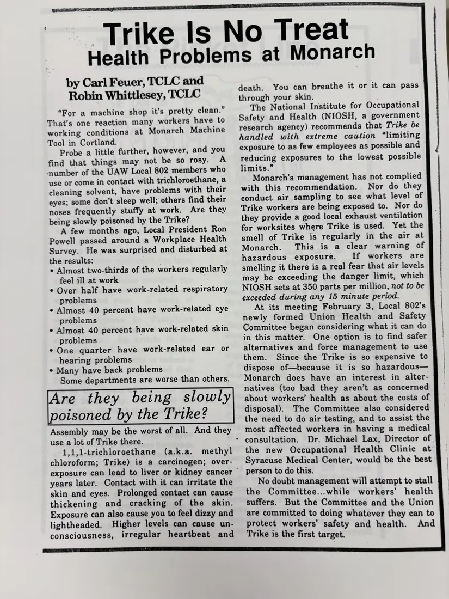

Newsletter, 1 page
“Trike Is No Treat: Health Problems at Monarch”
[c. 1990–1991]Approximate date
A survey by UAW Local 802's new health and safety committee at Monarch Machine Tool in Cortland found many workers reporting symptoms linked to trichloroethane (“Trike”), a degreasing solvent. The article explains its hazards and the committee's next steps.
Download or cite this itemPages


(open zoom view)Read the page text (machine-read, mostly readable)
This text was generated automatically from the photograph and has not been corrected. The image is the authoritative record.
rike by Carl Feuer, TCLC and Robin Whittlesey, TCLC “For a machine shop it’s pretty clean.” That’s one reaction many workers have to working conditions at Monarch Machine Tool in Cortland. Probe a little further, however, and you find that things may not be so rosy. A ‘number of the UAW Local 802 members who use or come in contact with trichloroethane, a cleaning solvent, have problems with their eyes; some don’t sleep well; others find their noses frequently stuffy at work. Are they being slowly poisoned by the Trike? A few months ago, Local President Ron Powell passed around a Workplace Health Survey. He was surprised and disturbed at the results: : e Almost two-thirds of the workers regularly feel ill at work e Over half have work-related respiratory problems e Almost 40 percent have work-related eye problems e Almost 40 percent have work-related skin problems * One quarter have work-related ear or hearing problems ¢ Many have back problems Some departments are worse than others. Are they being slowly poisoned by the Trike? Assembly may be the worst of all. And they use a lot of Trike there. 1,1,1-trichloroethane (a.k.a. methyl chloroform; Trike) is a carcinogen; over- exposure can lead to liver or kidney cancer ~ years later. Contact with it can irritate the skin and eyes. Prolonged contact can cause thickening and cracking of the skin. Exposure can also cause you to feel dizzy and lightheaded. Higher levels can cause un- s No Treat Health Problems at * consultation. Monarch death. You can breathe it or it can pass through your skin. The National Institute for Occupational Safety and Health (NIOSH, a government research agency) recommends that Trike be handled with extreme caution “limiting exposure to as few employees as possible and reducing exposures to the lowest possible limits.” Monarch’s management has not complied with this recommendation. Nor do they conduct air sampling to see what level of Trike workers are being exposed to. Nor do they provide a good local exhaust ventilation for worksites where Trike is used. Yet the smell of Trike is regularly in the air at Monarch. This is a clear warning of hazardous exposure. If workers. are smelling it there is a real fear that air levels may be exceeding the danger limit, which NIOSH sets at 350 parts per million, not to be exceeded during any 15 minute period. At its meeting February 3, Local 802’s newly formed Union Health and Safety Committee began considering what it can do in this matter. One option is to find safer alternatives and force management to use them. Since the Trike is so expensive to dispose of—because it is so hazardous— Monarch does have an interest in alter- natives (too bad they aren’t as concerned about workers’ health as about the costs of disposal). The Committee also considered the need to do air testing, and to assist the most affected workers in having a medical Dr. Michael Lax, Director of the new Occupational Health Clinic at Syracuse Medical Center, would be the best person to do this. No doubt management will attempt to stall the Committee...while workers’ health suffers. But the Committee and the Union are committed to doing whatever they can to ccanepeceemencieet nee ne tet cece! Peet protect workers’ safety and health. And consciousness, irregular heartbeat and _ Trike is the first target.
See something wrong, or recognize a person or event? Send a correction. If you hold rights in this item or think it should not be public, write to the same address.